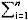

DoctoR
Терминальные состояния и клиническая смерть
Тема рассматривается в свете постоянных псевдонаучных изысканий на тему "Жизнь после смерти".
ВВЕДЕНИЕ
Реаниматология — наука об оживлении организма. А так, как я — реаниматолог, то говорить буду о жизни и смерти с точки зрения врача-реаниматолога, имеющего достаточно большой опыт наблюдения, ведения и предотвращения процесса умирания-смерти.
Вся информация о различных ощущениях, испытанных больными, пережившими клиническую смерть, чаще всего основана на субъективных данных (опрос этих больных, зачастую направляемый опрашиваемым в нужное ему русло). В этой статье я последовательно пройду по стадиям умирания, опишу объективные процессы, происходящие с организмом и сознанием умирающего и коснусь возможности и условий полного социального восстановления перенесших клиническую смерть.
ТЕРМИНАЛЬНЫЕ СОСТОЯНИЯ
По определению В.А. Неговского, к терминальным состояниям относятся преагония, агония и клиническая смерть. Качественный переход от жизни к смерти представляется последовательным закономерным нарушением функций и систем организма, заканчивающихся их выключением. Именно это обстоятельство — последовательность и постепенность выключения функций, дает время и возможность для вмешательства с целью восстановления жизни.
Преагональное состояние
Характеристики: нарушением деятельности центральной нервной системы (сопор или кома), гипотензия, централизация кровообращения, расстройства дыхания. Все это способствует развитию гипоксии и тканевого ацидоза. Тем не менее, в преагональном состоянии основным видом обмена веществ является окислительный (А.А. Бунятян). Этот период не имеет определенной продолжительности. Он может даже отсутствовать, например, при внезапном развитии фибрилляции желудочков сердца при поражении электрическим током. В случаях, когда организм имеет возможность включить различные компенсаторные механизмы (например, кровопотеря), преагональное состояние может продолжаться несколько часов, даже если лечебная помощь не проводилась.
Агония
Начало агонии часто весьма четко характеризуется клинически и в 100% случаев — на ЭКГ и энцефалографически (А.Э. Уолкер), т.к. переходом между преагонией и агонией является так называемая терминальная пауза. Клинически она характеризуется тем, что после резкого учащения дыхания внезапно наступает апноэ, исчезают роговичные рефлексы, на ЭКГ монотонный ритм меняется на идиовентрикулярный или на редкие эктопические импульсы. Терминальная пауза длится от нескольких секунд до 2-4 минут (Л.В. Усенко).
Динамика агонии дается по В.А. Неговскому: агония начинается короткой серией вдохов или единственным вдохом. Амплитуда дыхания нарастает, его структура нарушена — одновременно возбуждаются мышцы, осуществляющие и вдох, и выдох, что приводит к почти полному прекращению вентиляции легких. Достигнув определенного максимума, дыхательные движения уменьшаются и быстро прекращаются. Это объясняется тем, что высшие отделы центральной нервной системы на этом этапе выключаются (что экспериментально подтверждено В.А. Неговским с соавторами), и роль регуляторов жизненных функций переходит к бульбарным и некоторым спинальным центрам. Их деятельность направлена на мобилизацию всех последних возможностей организма сохранить жизнь. При этом не только восстанавливаются описанные выше дыхательные движения, но и появляется пульсация крупных артерий, синусовый ритм и кровоток, что может привести к восстановлению зрачкового рефлекса и даже сознания. Однако эта борьба со смертью неэффективна, т.к. энергетика организма в этой стадии пополняется уже за счет анаэробного гликолиза и не только становится недостаточной в количественном отношении, но и приводит к качественным изменениям — быстрому накоплению недоокисленных продуктов обмена.
Именно во время агонии организм теряет те пресловутые 60-80 грамм веса (за счет полного сжигания АТФ и истощения митохондрий клеток), которые в некоторых наукообразных статьях называют весом души, покинувшей после агонии тело.
Продолжительность агонии невелика, ее выраженность зависит от характера патологических изменений в организме, на фоне которых она возникла. После этого дыхание и сердечные сокращения прекращаются, и наступает клиническая смерть.
Клиническая смерть
— своеобразное переходное состояние между жизнью и смертью, начинается с момента прекращения деятельности центральной нервной системы, кровообращения и дыхания и продолжается в течение короткого промежутка времени, пока не разовьются необратимые изменения в головном мозге. С момента их наступления смерть расценивается, как биологическая (в контексте этой статьи мы уравниваем понятия социальной и биологической смерти ввиду необратимости процессов, происшедших в организме). Таким образом, главной динамической характеристикой клинической смерти является возможная обратимость этого состояния.
Во время клинической смерти дыхание и кровообращение отсутствуют, наблюдается полная арефлексия, однако клеточный обмен веществ продолжается путем анаэробного гликолиза. Постепенно запасы гликогена в мозге истощаются, и нервная ткань умирает.
Принято считать (Г.А. Рябов), что в обычных условиях срок клинической смерти у человека составляет 3-6 минут. Необходимо учитывать, что необратимые изменения в филогенетически молодых образованиях головного мозга (кора) наступают гораздо быстрей, чем в более древних (ствол, продолговатый мозг). При полной гипоксии в коре и мозжечке за 2-2.5 мин. возникают фокусы некроза, а в продолговатом мозге даже через 10-15 мин. погибают лишь единичные клетки. (А.Д. Адо с соавторами)
СМЕРТЬ МОЗГА
Смерть мозга представляет собой необратимое прекращение всех его функций. Ее главные диагностические признаки: отсутствие активности полушарий (отсутствие реакций на раздражения или ареактивность), отсутствие цефалических рефлексов, ЭЭГ-молчание (даже при проведении стимуляции).(А.Э. Уолкер)
Достаточным признаком смерти мозга является отсутствие признаков внутричерепного кровообращения (Wertheimer с соавт.)
ЖИЗНЬ ПОСЛЕ СМЕРТИ
После рассмотрения динамики умирания, перейдем к анализу доводов и положений, которыми оперируют практически все адепты "жизни после смерти" и "нематериальной души".
Ссылки:
- д-р Элизабет Кюблер-Росс, ("О смерти и умирании",1969)
- Дж. Мейерс ("Голоса на краю вечности",1973)
- Р. Моуди "Жизнь после жизни" (1976)
- д-р Элизабет Кюблер-Росс, ("Смерть не существует",1977)
- Д.Р. Уиклер ("Путешествие по ту сторону",1977)
- С. Роуз ("Душа после смерти",1982)
- Р. Моуди("Размышления о смерти после смерти",1983)
- П. Калиновский ("Переход",1991)
1.Контингент
Подавляющее большинство таких книг строится на опросе людей, "перенесших клиническую смерть". Причем полностью отсутствуют данные, когда, кем и каким образом фиксировался факт наступления клинической смерти у этих людей. Как говорилось выше, для констатации наступления клинической смерти необходима обязательная фиксация трех составляющих:
- отсутствие дыхания
- отсутствие кровообращения
- полная арефлексия.
Таким образом, данные, полученные при работе с такими группами больных, просто некорректно связывать с понятием собственно клинической смерти — в пул исследуемых могли попасть больные, перенесшие отравления (например, атарактическими [01] или ГОМК-подобными [02] лекарственными веществами), глубокую кому, эпилептический припадок (pti mal), психотический криз, геморрагический шок и т.д. Да и сами исследователи иногда не скрывают, что те или иные странные симптомы не связаны с клинической смертью, но почему-то не оценивают этого объективно.
Так, один из главных адептов "жизни после смерти" Р.Моуди, критикуя физиологическое объяснение приводимых им симптомов (тоннель, отделение от тела и пр.) пишет:
"Основная ошибка этого представления заключается в следующем: как можно легко увидеть из обзора предсмертного опыта, приведенного выше, в большом числе случаев переживание предсмертного опыта имело место еще до (!!! — прим. GNG) каких-либо физиологических повреждений, предполагаемых упомянутой гипотезой."
О каком предсмертном опыте можно говорить при отсутствии каких-либо физиологических повреждений? Отсутствие физиологических повреждений изучает нормальная физиология — физиология здорового организма. И далее Моуди пишет:
"В самом деле, в нескольких случаях в течение всего переживания предсмертного опыта не было никаких телесных повреждений, в то же время, каждый отдельный элемент, который появлялся в случае жестоких травм, наблюдался также и в других примерах, в которых какие-либо травмы полностью отсутствовали."
А где же элементарные выводы — в одном случае "не было телесных повреждений", в другом — человек умирал от "жестоких травм", а в большинстве случаев (не описанных автором) вообще никаких симптомов не было — так, может быть, описанное автором укладывается в какой-нибудь другой ряд, а не является предсмертным опытом?
Вывод: если у опрашиваемого не было в анамнезе четкой клинической фиксации клинической смерти, он не может быть включен в общую выборку больных, демонстрирующих "жизнь после смерти". Ни в одном обозримом источнике, доказывающем наличие "жизни после смерти", такие данные не приводятся. Это значит, что материал изначально строится на нерепрезентативных выборках и не может оцениваться как научные данные.
2.Субъективность
Предположим пока (см. далее), что большинство опрашиваемых добросовестно и полностью вспомнили то, что перенесли во время "умирания". Возникает вопрос, а сколько людей, перенесших клиническую смерть, может потом более или менее подробно рассказать об этом?
Вот, что говорят сторонники "жизни после смерти":
"Только 10 процентов людей, находившихся на грани смерти или переживших клиническую смерть, могли ясно припомнить, что они переживали при этом." (Э. Кюблер-Росс). Другие исследователи называют более высокие цифры — от 15 до 35 процентов.
Теперь я приведу статистику программы Collaborative Study (Совместное исследование) — совместной программы, организованной National Institute of Neurological and Communicative Disorders and Stroke, в которой принимали участие 9 крупных клиник.
| Исход | Число случаев | Процент |
| Смерть вследствие остановки сердца | 345 | 68.59% |
| Смерть мозга | 114 | 22.66% |
| Неполное восстановление | 18 | 3.58% |
| Полное восстановление | 26 | 5.17% |
| Итого | 503 | 100% |
По истечении трех месяцев после включения в программу данного исследования 41 больной был жив (8.15%). Из них 18 (3.58%) имели те или иные нарушения высшей нервной деятельности и требовали постороннего ухода, причем один из них умер через четыре месяца после первой клинической смерти. Таким образом, только у 5.17% больных, перенесших клиническую смерть, впоследствии наступило полное восстановление нарушенных функций. Из этого числа больных в 14 случаях первоначально были диагностированы лекарственные отравления, и они находились в коме более 30 минут до поступления.
Попробуем сделать выводы из вышесказанного:
Т.к. приверженцы "жизни после смерти" приводят гораздо более высокие (от 10 до 30%) цифры людей, которые "могли ясно припомнить, что они переживали", вероятно, значительная часть этих воспоминаний просто не связана с клинической смертью, или воспоминания "искусственны", навязаны опрашиваемым. У психиатров есть понятие "патологической внушаемости", когда больной с неустойчивой психикой (предпсихотическое состояние, псих. астенизация и т.д.) послушно "видит" и "слышит" то, о чем ему говорит врач. Это полностью относится к группе больных, перенесших клиническую смерть и постреанимационную болезнь. Таким образом, если в какой-либо статье приводятся данные, что более 4,4-6,0% больных (p <0.05) [03], перенесших клиническую смерть, имеют какие-то подробные посмертные воспоминания, эти данные просто необъективны (группа нерепрезентативна, неверны методики опроса и т.д.).
Симптомы
Прежде, чем перейти к обсуждению симптомов, приводимых в доказательство "жизни после смерти", хочу обратить внимание, что при обсуждении этого вопроса уравниваются воспоминания двух совершенно различных групп людей (Р. Моуди):
- Опыт людей, которых врачи считали или объявили клинически мертвыми и которые были реанимированы.
- Опыт людей, которые в результате аварии либо опасного ранения или болезни были очень близки к состоянию физической смерти.
Одно это уже должно бы заставить исследователя исключить смерть из логической цепочки всех дальнейших рассуждений (по правилу пересекающихся множеств) [04].
Итак, симптомы...
- "Неспособность выразить словами"
- Способность слышать "Ощущение покоя" или "страха"(при суициде)
- Шум, звон различной интенсивности.
- Темный тоннель, темная пустота
- "Выход из тела", "перемещение в пространстве независимо от мертвого тела"
- Обострение физических чувств (слух, зрение, обоняние)
- Встречи с другими лицами, часто - умершими ранее, особое выделение светящегося "духа", "ангела"
- Картины прошлой жизни
- Достижение какого-то предела (весьма размытое понятие)
- Нежелание возвращаться
А теперь я попробую привести те же симптомы в несколько иной терминологии:
- затруднение выражения виденных образов в символах второй сигнальной системы
- усиление патологической доминанты слуховым раздражителем
- торможение ретикулярной формации межуточного мозга
- более сильное энергетическое обеспечение механизмов центрального зрения
- различные интегративные нарушения центральной нервной системы
- большая стойкость подкорковых очагов возбуждения, имеющих высокий индекс корреляции
- полное прекращение интеграционной функции коры
Это перечисление ничего не напоминает врачам интенсивной терапии? Симптомы почти дословно взяты из описания действия кетамина (кеталар, каллипсол) на центральную нервную систему (проф. Л.П. Чепкий). Отличительная особенность этого препарата — вызывание дезинтеграции процессов возбуждения — торможения коры головного мозга — так называемый диссоциативный наркоз. В результате больные не чувствуют конкретных раздражений (боль, проприоцептивное чувство), но тоже слышат, видят (и, кстати, довольно часто тоннель или "трубу"), куда-то "уходят", "возносятся", встречают близких и т.д. И ведь все это неоднократно описано в специальной литературе. Просто удивляет способность некоторых авторов "не видеть того, что им не нужно". В лучшем случае, следует оговорка — "люди, которых я опрашивал, не были под наркозом".
А это уже сознательное или "защитное" передергивание. Речь ведь идет не о наркозе, а о диссоциации участков коры головного мозга, вызывающих конкретные симптомы. При умирании диссоциативные процессы обусловлены гипоксемией и тканевым ацидозом, но они наступают и проявляются на первом этапе умирания (когда кора еще не отключилась) и после оживления (если мозг не погиб).
В заключение хочу привести еще некоторые состояния, сопровождающиеся корковой диссоциацией и вышеперечисленными симптомами.
- интоксикация (нередко передозировки некоторых лекарственных веществ, сопровождающиеся глубокой комой, принимаются за смерть). И если больной выведен из этого состояния, он описывает почти все вышеперечисленные симптомы, а иногда даже уверен, что побывал на том свете (C. Theines, T. Haley — Клиническая токсикология, Филад.1972).
- действие некоторых психотропных препаратов(без передозировки) — упоминавшийся кетамин, ЛСД. Хочется подчеркнуть один нюанс — около 15-17% принимавших ЛСД отмечают, что после этого "общались с инопланетянами. Так, что, после этого писать трактат "ЛСД как проводник к иным мирам"?
- гипогликемическая кома. В литературе достаточно описания психопатологических симптомов, сопровождающих развитие этого состояния — нужно только хотеть читать.
- нарушения, обусловленные физическими воздействиями (например, гипотермическая кома, кстати, чаще всего дающая в прошлом феномен "чудесного воскрешения" при согревании в гробу или в морге — А.Э. Уолкер, Смерть мозга, М,1988). После повышения температуры тела до 35°C и выше больной, если приходит в себя, рассказывает и про "ангелов", и про "неземное тепло", и про "свет в конце тоннеля".
ЗАКЛЮЧЕНИЕ
В заключение приведу слова доктора философии Раймонда Моуди: "я не стремлюсь "доказать", что есть жизнь после смерти. И я, вообще, не думаю, что такое "доказательство" действительно возможно."
- Атарактическое отравление - отравление транквилизаторами (их наз. АТАРАКТИКИ), которые обеспечивают защиту мозга от гипоксии - поэтому отравление может быть настолько глубоким, что мозг можно посчитать ареактивным.
- ГОМК (гамма-оксимасляная кислота) -подобные - вещества, вызывающие физиологический сон (с подавлением ЭЭГ активности). Например - оксибутират Na - при передозировке и самопроизвольном выходе (в организме есть ферментная цепочка, утилизирующая ГОМК) больной проходит через "выключение-включение" мозга - подтверждено электроэнцефалограммой.
- p - статистическое отклонение вероятности события от единицы. В медицине данные считаются достоверными, если они отклоняются не более, чем на 0.05. (см. ниже)
- Пусть множество А - группа людей, которые умирали и имели симптомы ХYZ. Множество В - не умирали и имели симптомы PQX. X - симптомы жизни после смерти. А пересекается с В только в области Х. Это означает, что смерть не входит в зону пересечения, и при выстраивании логических цепочек нельзя делать вывод смерть -> X , т.к. в множестве В смерти не было, а Х были.
Более подробно об использовании математической статистики в медицине
В медицине (вторая по точности после математики) приняты довольно лояльные критерии переноса данных с выборочной совокупности на генеральную. Один из таких критериев — своеобразный коэффициент достоверности приводимых данных: p, принято, что он должен быть меньше 0.05 — т.е. он не рассчитывается, а установлен, как показатель того, что приводимые данные достоверны и могут экстраполироваться на всю генеральную совокупность. Иногда (например, при оценке лабораторных данных), требования ужесточаются — p < 0.001. Если в медицинской литературе приводятся любые цифровые данные (таблицы, диапазоны и т.д.) и не указан p, то это просто описание опыта конкретного исследователя, дается в информационных целях и не может быть перенесено на генеральную совокупность. Берется несколько таких описаний, если видна система, дальше делается так (собственно медицинская статистика):
- Делаем выборку: 5%, 5.17%, 2.00%, 35%, 17.33% и т.д. (тут часть данных, скорее всего, достоверны, а часть -нет)
- Считаем М - среднее арифметическое выборки: M =
 Xi / n = 5.20
Xi / n = 5.20 - Потом считаем выборочную дисперсию — степень рассеяния элементов вокруг среднего значения: D = (Xi-M)2 / (n-1)
- Берем из D квадратный корень и получаем среднее квадратическое отклонение (стандартное отклонение) S =

- Т.к. S имеет ту же размерность, что и элементы исходного массива (%, мм.рт.ст, кг и т.д.), а часто нужно сравнивать разнородные величины, характеризующие один и тот же процесс, введем коэффициент изменчивости С, равный квадратному отклонению, выраженному в процентах от среднего значения: C=S/M * 100
- Если мы разделим его на 2, получим p — так называемый предел допустимых отклонений (указывается со знаком "меньше", читается: p меньше 0.05).
- И, вот, взяв за основу данные статистики программы Collaborative Study (это корректно, т.к. это наибольшая известная выборка — всего посчитано более 14 000 случаев) — 5.17% нормальных исходов и установив допустимые вариации меньше 0.05 - это стандартно для медицины, я получил среднее отклонение 0.80% и смог установить, в каких пределах будут лежать данные, не противоречащие выводам Collaborative Study — 4.37% -5.97%. И, естественно, когда пишут "30% людей, перенесших клиническую смерть, вспомнили....", это значит, что в группу попала куча людей, у которых клинической смерти не было.
Да, обратите внимание на любые цифровые данные в любых научных медицинских журналах — если p указано, и оно меньше 0.1 — это статистика-сырец, и кто-то просто спешил напечатать статью, если p<0.05 — эти данные можно переносить на другие сходные группы. Если p не указано, а данные интересные, их просто нужно принять к сведению, но на них нельзя ссылаться.
Врач-реаниматолог Губин Николай Геннадьевич (GNG)
13-15 августа 2000 г.